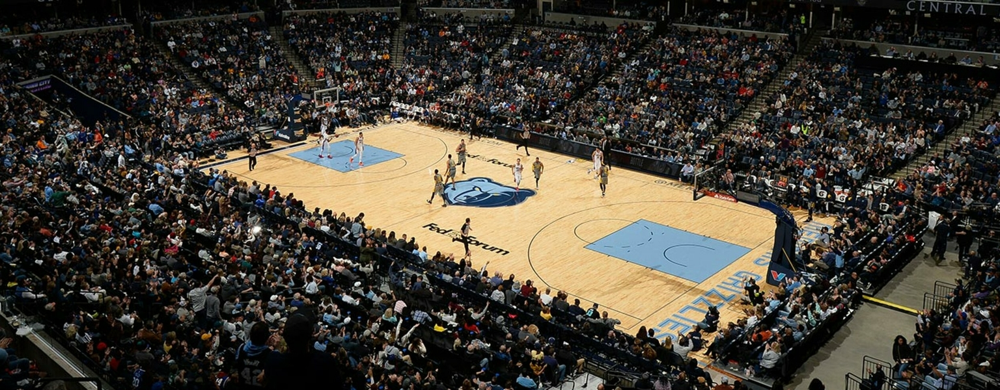

Memphis Grizzlies - Fundado em 1995, o Memphis Grizzlies tem se destacado nas últimas temporadas como uma das equipes mais energéticas da NBA. A equipe se tornou conhecida pela sua defesa implacável e um estilo de jogo agressivo. Com a ascensão de Ja Morant como uma das estrelas da liga, os Grizzlies buscam alcançar o título da NBA pela primeira vez em sua história.
Elenco - Ja Morant (#12), Desmond Bane (#24), Jaren Jackson Jr. (#13), Steven Adams (#4), Xavier Tillman (#2), Ziaire Williams (#8), Santi Aldama (#7), Luke Kennard (#10), David Roddy (#27), Derrick Rose (#23).
Títulos NBA - 0
Títulos Conferência - 0
Estádio - FedExForum (18.119)
